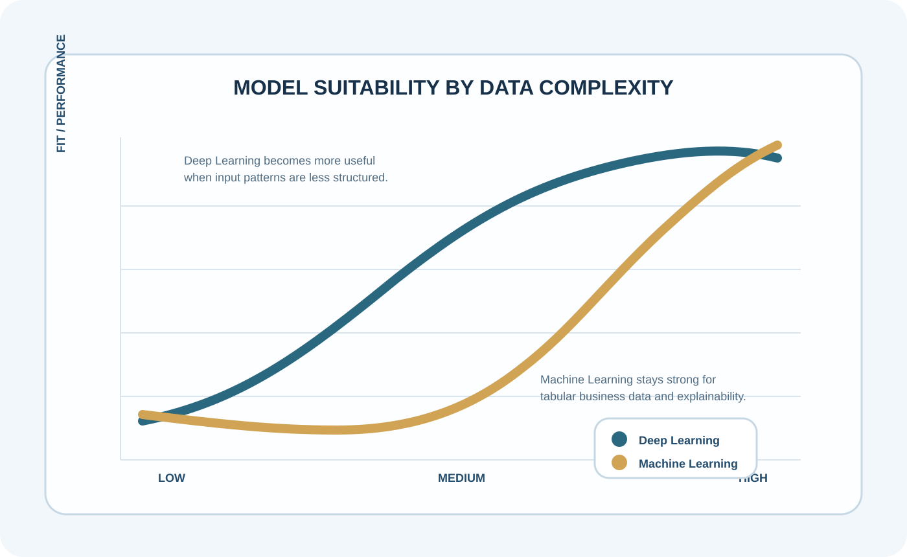
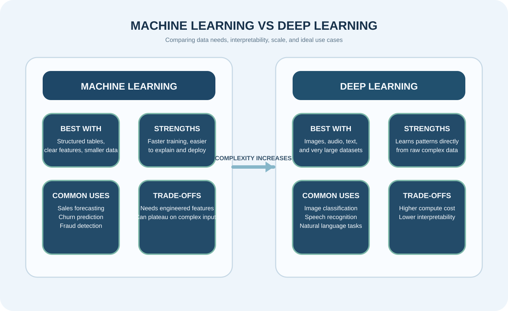

Artifact Information
This artifact translates a technical comparison into a visual and readable case study that can be understood quickly by an academic or professional audience.
Introduction
The artifact explores how model choice should depend on the problem being solved rather than assuming the more complex method is always the better one.
Description
It compares structured-data use cases for ML with image-heavy and recognition-focused use cases for DL, making the difference easier to understand through clear examples.
The goal was to show how data type, interpretability, cost, and scale influence model selection in a realistic business or AI setting.


Objective
- Understand the difference between ML and DL
- Match each approach to the right use case
- Compare trade-offs in interpretability, cost, and scale
Process
- Selected practical structured-data and image-based examples
- Compared how each method handles different input types
- Evaluated explainability, complexity, and expected output needs
- Summarized the comparison in visual form for faster understanding
Tools and Technologies Used
Value Proposition
This artifact demonstrates that the best AI model depends on the structure of the data and the purpose of the problem rather than on complexity alone.
Unique Value: Helps explain when simpler ML or layered DL is the better fit.
Relevance: Useful for AI and data professionals choosing the right model approach.
Reflection
This project improved my understanding of how data structure, business context, and interpretability all shape model selection.
References
Scikit-learn documentation; TensorFlow documentation; introductory AI and deep-learning learning resources.